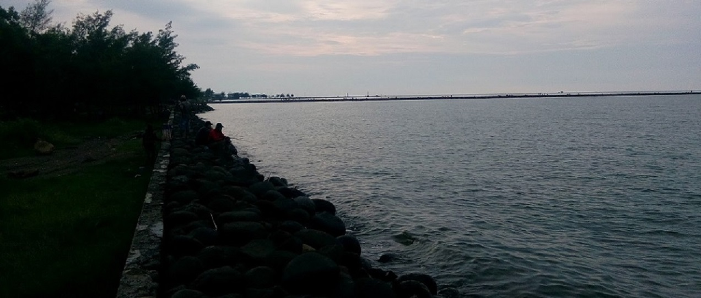

Pantai Indah Slamaran
Konon letak keraton Dewi Lanjar terletak dipantai Pekalongan disebelah sungai Slamaran

Museum Batik Kota Pekalongan
Berwisata ke Kota Pekalongan belum afdhol kalau belum mampir ke Museum Batik Pekalongan tepatnya di Jl. Jetayu No.1, Pekalongan 51152, Indonesia

Maqam AL habib Ahmad Al Athas
Khoul Habib Ahmad Al-Athas kemarin bulan Sya'ban